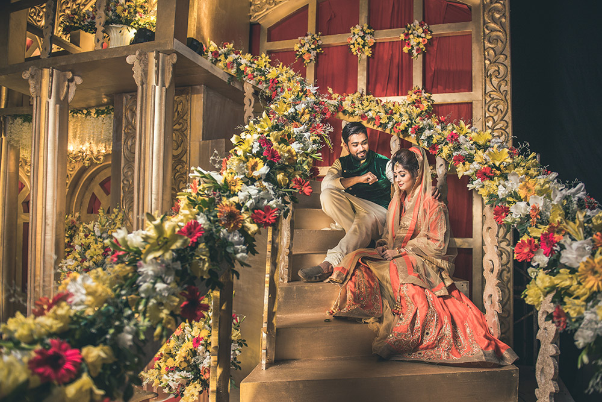

What would be the state of us society if cameras were never invented?
Several positive ways photography has changed the world :
1). The world would be less socially aware. The New York Photo League and others have taken topics like poverty into the mainstream as very real problems at times against the rhetoric of the political environment. The horrors of famine and disease would be relegated to a few lines in a newspaper article that would not begin to convey what a single photograph conveys.
2). There would be few if any National Parks. William Jackson, George Masa, Ansel Adams and others produced images that motivated the nation to creat, fund, and continue to fund the National Parks in the United States.
2018-02-03/BY XBRIDAL
Share this entry
Several positive ways photography has changed the world

Several positive ways photography has changed the world:
1). The world would be less socially aware. The New York Photo League and others have taken topics like poverty into the mainstream as very real problems at times against the rhetoric of the political environment. The horrors of famine and disease would be relegated to a few lines in a newspaper article that would not begin to convey what a single photograph conveys.
2). There would be few if any National Parks. William Jackson, George Masa, Ansel Adams and others produced images that motivated the nation to creat, fund, and continue to fund the National Parks in the United States.
2018-02-03/BY XBRIDAL
Share this entry
What would the world have experienced if cameras were never invented?
Several positive ways photography has changed the world:
1). The world would be less socially aware. The New York Photo League and others have taken topics like poverty into the mainstream as very real problems at times against the rhetoric of the political environment. The horrors of famine and disease would be relegated to a few lines in a newspaper article that would not begin to convey what a single photograph conveys.
2). There would be few if any National Parks. William Jackson, George Masa, Ansel Adams and others produced images that motivated the nation to creat, fund, and continue to fund the National Parks in the United States.